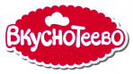

| «Простоквашино» — крупный бренд, под которым выпускается различная молочная продукция. Марка принадлежит компании Danone (ранее «Юнимилк»). Ее основали в 2002 году российские бизнесмены Андрей Бесхмельницкий и Андрей Блох. | |
| «Домик в деревне» – бренд молочной продукции, появившийся в 1997 г. в России под крылом крупного холдинга «Вимм-Билль-Данн». | |
|  | Торговая марка «Вкуснотеево» является собственностью холдинга «Молвест», основанного в 2006 году на базе молочного комбината «Воронежский». Его флагманский бренд зарегистрирован в 2000 году, сегодня под ним производится более 200 товарных позиций. |